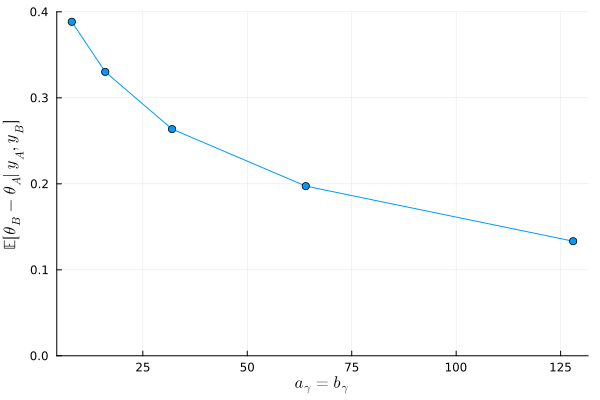

Exercise 6.1 Solution Example - Hoff, A First Course in Bayesian Statistical Methods
標準ベイズ統計学 演習問題 6.1 解答例
a)
answer
より、 \[ E[\theta_A \theta_B] \neq E[\theta_A] E[\theta_B] \] となるが、 もし\(\theta_A\)と\(\theta_B\)が独立ならば、 \( E[\theta_A \theta_B] = E[\theta_A] E[\theta_B] \) が成り立つはずである。 よって、\(\theta_A\)と\(\theta_B\)は独立ではない。
(From this, we have \[ E[\theta_A \theta_B] \neq E[\theta_A] E[\theta_B] \] However, if \(\theta_A\) and \(\theta_B\) were independent, then \( E[\theta_A \theta_B] = E[\theta_A] E[\theta_B] \) should hold. Therefore, \(\theta_A\) and \(\theta_B\) are not independent.)
また、このような同時事前分布の設定は、B群の一人当たりの子供の数が A 群の一人当たりの子供の数の実数倍であるという事前の信念がある時に正当化される。
(Furthermore, setting the joint prior distribution in this manner is justified when there is a prior belief that the number of children per person in Group B is some real-valued multiple of the number of children per person in Group A.)
b)
answer
c)
answer
d)
answer
menchild_bach = []
open("../../Exercises/menchild30bach.dat") do file
for line in eachline(file)
append!(menchild_bach, parse.(Int, split(line)))
end
end
menchild_nobach = []
open("../../Exercises/menchild30nobach.dat") do file
for line in eachline(file)
append!(menchild_nobach, parse.(Int, split(line)))
end
end
a_θ = 2
b_θ = 1
γ_prior_param = [ 2^i for i in 3:7 ]
function get_θ_diff(y_A, y_B, a_θ, b_θ, a_γ, b_γ, S)
sy_A = sum(y_A)
n_A = length(y_A)
mean_A = mean(y_A)
sy_B = sum(y_B)
n_B = length(y_B)
mean_B = mean(y_B)
θ = Vector{Float64}(undef, S)
θ[1] = t = mean_A
γ = Vector{Float64}(undef, S)
γ[1] = g = mean_B/mean_A
for s in 2:S
dist_θ = Gamma(a_θ + sy_A + sy_B, 1/(b_θ + n_A + n_B * g))
t = rand(dist_θ)
dist_γ = Gamma(a_γ + sy_B, 1/(b_γ + n_B * t))
g = rand(dist_γ)
θ[s] = t
γ[s] = g
end
θ_A_mc = θ
θ_B_mc = θ .* γ
return mean(θ_B_mc .- θ_A_mc)
end
function θ_diff_by_p(p, S)
get_θ_diff(menchild_bach, menchild_nobach, a_θ, b_θ, p, p, S)
end
S = 5000
exp_diff = []
for p in γ_prior_param
push!(exp_diff, θ_diff_by_p(p, S))
end
exp_diff
:RESULTS:
5-element Vector{Any}:
0.38839289030002194
0.3301515531279979
0.26360712597646224
0.1972987037901306
0.1332427833449685

\( a_{\gamma} = b_{\gamma}\)に従うガンマ分布の期待値は 1 であり、この値が大きければ大きいほど\( \frac{\theta_B}{\theta_A} \)が 1 （すなわち、A群と B 群の子供の数の平均が等しい） という事前の信念が強いことになる。 上のグラフからも、\(a_{\gamma} = b_{\gamma} \)が大きくなるにつれて、 データの影響が小さくなり、事後期待値の差が小さくなっていることがわかる。
(The expectation of a Gamma distribution with shape \(a_{\gamma}\) and rate \(b_{\gamma}\) where \( a_{\gamma} = b_{\gamma}\) is 1. The larger this common value (\(a_{\gamma} = b_{\gamma}\)), the stronger the prior belief that \( \frac{\theta_B}{\theta_A} = 1 \) (i.e., that the mean number of children in Group A and Group B are equal). From the graph above, it can also be seen that as \(a_{\gamma} = b_{\gamma} \) increases, the influence of the data decreases, and the difference between the posterior expectations becomes smaller.)